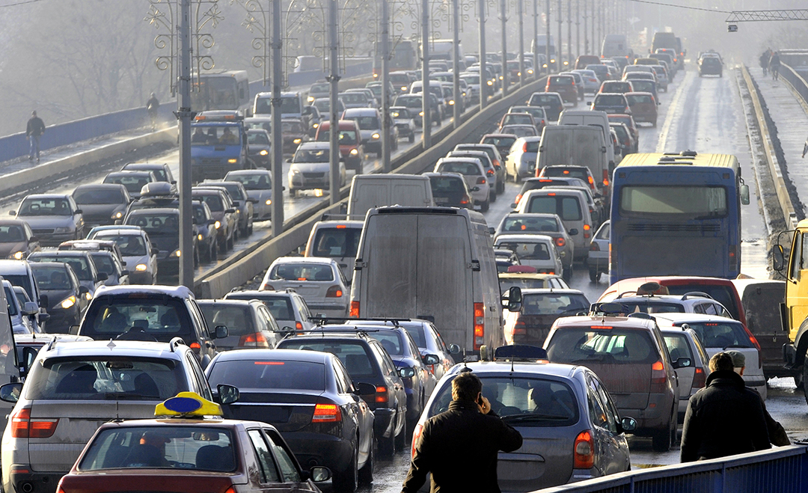
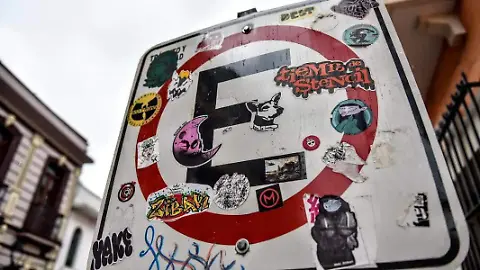

Bienvenido/a a Sentidos Pacíficos, una iniciativa que busca mejorar nuestra comunidad urbana al reducir la contaminación audiovisual.
¿Buscas una mejora en tu comunidad y en tu calidad de vida?
La contaminación audiovisual es la combinación de exceso de ruidos y estímulos visuales que saturan nuestros sentidos, creando ambientes estresantes y poco saludables, especialmente en zonas urbanas.
Puedes identificar este problema cuando te sientes abrumado, cansado o estresado sin una razón clara.


Además, estos entornos generan inseguridad, deterioro económico, conflictos vecinales y daños a la fauna y flora.
Este proyecto busca crear espacios urbanos más tranquilos, ordenados y saludables mediante acciones comunitarias simples y visibles.
Salud: menos estrés, mejor descanso y concentración.
Convivencia: espacios más seguros y agradables.
Impacto social: mayor valor urbano y bienestar colectivo.
Pequeñas acciones generan grandes cambios.
Vivimos rodeados de ruido y saturación visual, pero no deberíamos normalizarlo.
Cuidar nuestros espacios es cuidarnos a nosotros mismos.